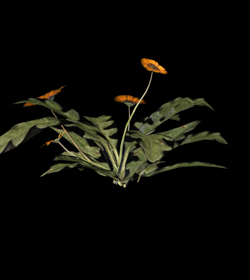

Sardor Nodirov
ENGINEER / BUILDER / CURIOUS HUMAN
I build software that listens, responds, and feels alive.
Currently building Aristotle ↗.

01 / Work & attention
I care about systems with clear internal rules, interfaces that explain themselves, and products that respect the person on the other side of the screen.
Most of my attention goes here. Building an AI tutor, and thinking about how software can help people understand.
An ongoing experiment in making a website from one material. Words, pictures, and interactions share the same alphabet.
02 / Studies in character
Different sources. The same cells. A small collection of moving pictures, translated into type.
A face becomes a phrase, then another.
Volume and light, written in numbers.
SCROLL SLOWLY. THE LETTERS STAY. THEIR MEANING CHANGES.
03 / A little about this place
I like the space between engineering and expression. The small decisions that make a tool feel considered. The unexpected things that happen when you follow a simple rule far enough.
Here, that rule is a character cell. The grid stays still. As you scroll, its letters become new words, new pictures, new colors.
The flower is a study from a gazania scan by Poly Haven ↗. The portrait is a found-footage experiment. Both are material studies in this evolving site.
04 / Keep in touch
For a conversation, a collaboration, or something interesting.
[ github ↗ ] [ x ↗ ] [ linkedin ↗ ]
Made of characters. Full of possibilities.